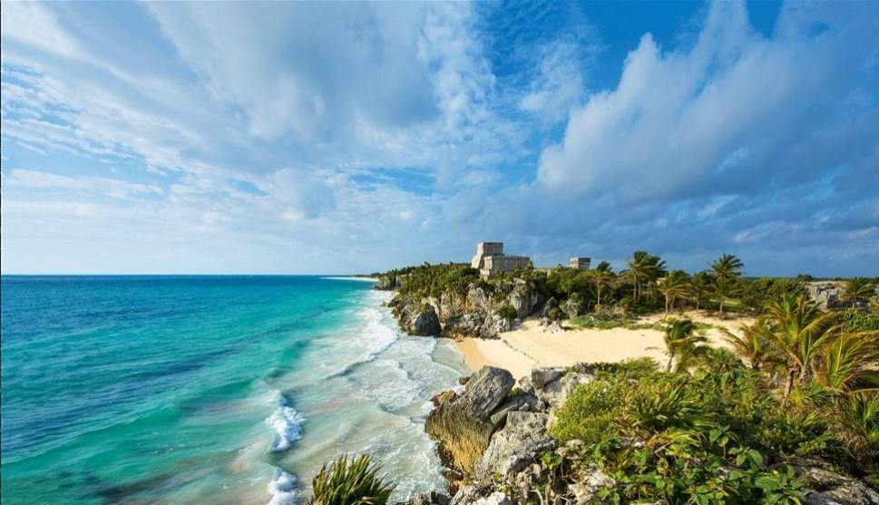
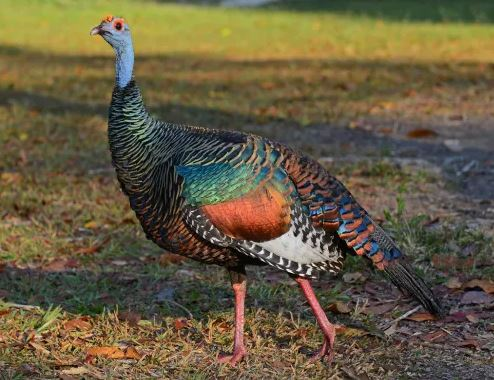

Yucatán

La mezcla del origen indígena y la influencia hispánica caracterizan a las manifestaciones arquitectónicas de Yucatán, compartiendo el espacio urbano con las influencias de otras culturas como la mexicana, la francesa, la italiana y la estadounidense.
Atractivos Turísticos
Pirámides de Chichen-Itzá

El recinto arqueológico ocupa 15 km2, es Patrimonio de la Humanidad desde 1998 y constituye uno de los testimonios mejor preservados de la civilización maya. Este templo es el edificio principal de la ciudad de Chichén Itzá.
Cenote Ik Kil

El cenote Ik Kil es uno de los cenotes en Yucatán más famosos. Esto se debe a su cercanía con Chichén Itzá y sus hermosos lugares que permiten tomar fotos impresionantes. Este cenote es semi abierto y es tan bonito que te quitará el aliento. La mejor opción es visitarlo temprano en la mañana, ya que por la tarde se llena de multitudes que vienen de la zona arqueológica.
Animales en peligro de extinción
El pavo del monte

El pavo de monte, kuts o pavo ocelado, es un ave de gran tamaño que alcanza hasta 102 cm de longitud. Habita principalmente en bosques, así como también en praderas, sabanas, matorrales y sembradíos, pudiendo estar asociada a áreas no inundables o estacionalmente inundadas.
Los reportes indican que el pavo de monte ha desaparecido del norte de Yucatán y el resto de la población en el estado es decreciente, por lo que ha sido declarado por la Unión Internacional para la Conservación de la Naturaleza (UICN) como casi amenazado.
¿Cómo llego a Yucatán?
El Estado de Yucatán Se localiza en el sureste de la República Mexicana, en la parte norte de la península de Yucatán. Limita al norte y oeste por el golfo de México, al sureste por el estado de Quintana Roo, y al suroeste por el estado de Campeche. La mayor parte de su territorio es una planicie, constituido en su mayoría por roca caliza. Su extensión territorial es de 39,524 km2. Lo integran 106 municipios, y su capital es Mérida